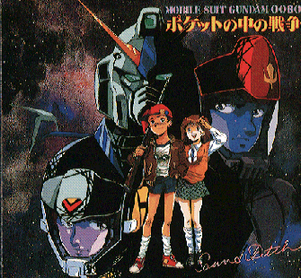

Gundam

From the Anime Pocket Guide:
Cast:
Al's mother (Gundam 0080) ................ Ai Orikasa
Noah Hathaway (Char's Cntratk) .......... Nozomu Sasaki
Quess Paraya (Char's Cntratk) ......... Maria Kawamura
Chemin Noah (Char's Cntratk) ............ Mayumi Shoh
Agi Chien (Char's Cntratk) .......... Mitsuki Yayoi
Lairu Captain (Char's Cntratk) ....... Kazuyuki Sogabe
Musaka Captain (Char's Cntratk) ........ Yousuke Akimoto
Lezun Schneider (Char's Cntratk) ............ Kazue Ikura
Guss Gyunei (Char's Cntratk) ...... Kouichi Yamadera
Katherine (Char's Cntratk) ........... Kazue Komiya
Migeru Nanai (Char's Cntratk) ..... Yoshiko Sakakibara
Master Asia (G Gundam) .............. Yousuke Akimoto
Cas (G Gundam) .................... Kae Araki
Maria Ruize (G Gundam) ................... Yumi Touma
Other Resources
Anime Video Game Resource Center © 1998 by Luis A. Cruz